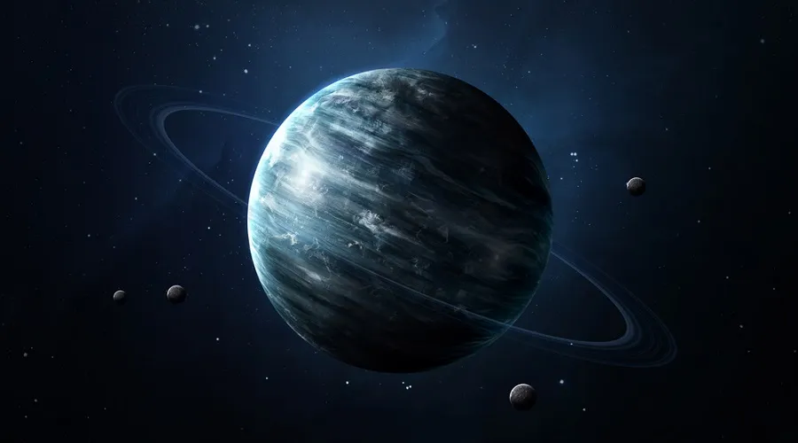
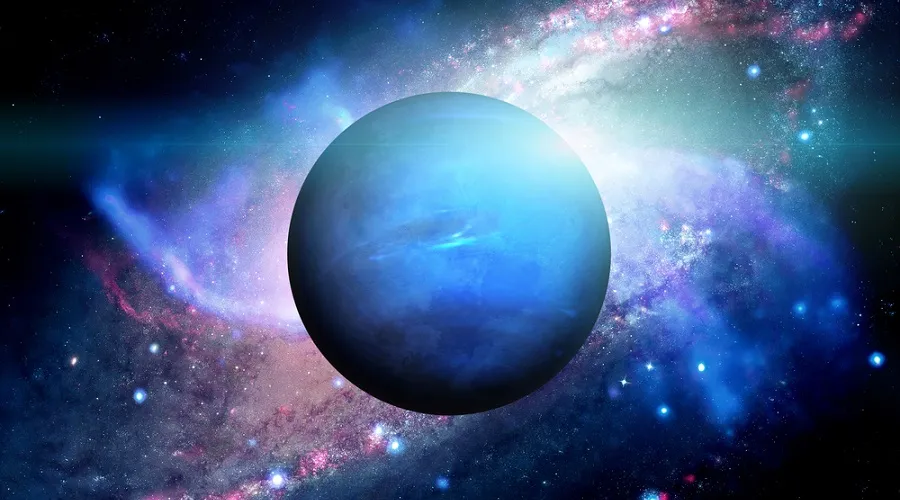

Planetas do sistema solar |
| Definições: |
O Sistema Solar é um conjunto formado por oito planetas e outros corpos celestes,
que orbitam o Sol, a sua principal estrela. Está localizado na Via Láctea, uma das galáxias
que formam o Universo. São planetas do Sistema Solar: Mercúrio, Vênus, Terra, Marte, Júpiter,
Saturno, Urano e Netuno.
|
|
O Sistema Solar compreende o conjunto constituído pelo Sol e todos os corpos celestes que
estão sob seu domínio gravitacional.
|
|
Mercúrio
|
Mercúrio é o planeta mais próximo do Sol. Esse planeta é capaz de refletir cerca de 12% da luz
solar, sendo um dos astros mais brilhantes vistos da Terra. Encontra-se a cerca de 57.910.000 km
do Sol.
Sua superfície é repleta de crateras, enquanto seu núcleo é rico em ferro, e a espécie de atmosfera
existente no planeta é composta, em sua maioria, por hélio (98%) e hidrogênio (2%). A temperatura do
planeta durante o dia atinge 430ºC.
|
.webp) |
| Vênus |
Vênus é o segundo planeta em relação ao Sol, conhecido também como Estrela D'alva, por ser, muitas
vezes, um dos astros mais brilhantes no céu no período da noite. Encontra-se a aproximadamente
108.200.000 km do Sol. Possui características semelhantes às da Terra como tamanho e massa, mas
difere-se nas condições que propiciam a vida.
Possui uma atmosfera 92 vezes mais densa que a atmosfera terrestre, estando o planeta quase
sempre envolto por nuvens. Essa atmosfera é composta especialmente por CO2, o que contribui
para que a temperatura do planeta chegue a 460ºC.
|
|
| Terra |
A Terra é o planeta que mais se difere dos demais, visto suas condições e características que
permitem a existência de vida. O planeta encontra-se a uma distância favorável do Sol, cerca
de 149.600.000 km. Seu dinamismo proporcionado pela radiação solar, forças da maré e o calor
proveniente do seu núcleo o tornam um planeta único no Sistema Solar.
Sua temperatura média é de 14ºC, e apenas 60% da energia solar é absorvida. A atmosfera terrestre
é atualmente composta por gases como nitrôgenio, oxigênio, gás carbônico e vapor d'água. Sua
estrutura interna é composta por núcleo, manto e crosta terrestre. Possui um satélite natural, a
Lua, com rotação sincronizada à da Terra.
|
|
| Marte |
Marte é o quarto planeta segundo à distância do Sol. Encontra-se a aproximadamente 227.940.000
km dessa estrela. Esse planeta possui o clima mais parecido com o da Terra, assim como o seu
movimento de rotação.
A observação da sua superfície levou alguns cientistas a considerarem possível existência de
formas de vida no planeta. Sua superfície é caracterizada pela presença de crateras e poeira,
composta por magnetite, que confere ao solo marciano uma cor avermelhada.
O solo do planeta é rico em ferro e silício. A atmosfera do planeta é menos espessa que a da
Terra, sendo constituída especialmente por CO2, nitrogênio, vestígios de oxigênio, monóxido de
carbono e vapor d'água. As temperaturas no planeta podem variar entre -76ºC e -10ºC.
|
.webp) |
| Júpiter |
Júpiter é conhecido como o “gigante gasoso”, sendo o maior planeta do Sistema Solar, além do
planeta com maior velocidade de rotação. Encontra-se a aproximadamente 778.330.000 km do Sol.
Sua aparência apresenta tons de vermelho, laranja, marrom e amarelo.
Apesar de ser o planeta de maior massa, ele não é o mais denso, visto que é composto por gases,
especialmente hélio e hidrogênio. Acredita-se que o planeta possua um núcleo rochoso e não se
sabe ao certo se possui uma superfície definida. No ano de 1979, descobriram que Júpiter
apresenta um sistema de anéis.
|
.webp) |
| Saturno |
Saturno é o segundo maior planeta do Sistema Solar, estando a aproximadamente 1.429.400.000 km
do Sol. O planeta gasoso é conhecido por seus anéis e acredita-se que esses são compostos por
gelo, devido ao seu intenso brilho, podendo refletir até 80% da luz solar. O planeta possui um
único grande satélite conhecido como Titã.
A atmosfera do planeta é constituída, principalmente, por hidrogênio e hélio. A densidade do
planeta é bastante inferior à da Terra, por causa da sua composição. Há indícios de que o planeta
possua um núcleo sólido, assim como Júpiter.
|
.webp) |
| Urano |
Urano é um planeta de pouca luminosidade e encontra-se a cerca de 2.880.990.000 km do Sol.
Apresenta massa menor que Júpiter, porém apresenta um núcleo mais denso, o que possibilita
dizer que talvez possua um núcleo rochoso.
Urano foi descoberto em 1781. O planeta possui anéis, os quais foram descobertos em 1977 e são
bastante opacos à luz. Além disso, apresenta cerca de 27 satélites naturais e cerca de 27 luas.
Sua atmosfera é composta por hidrogênio, hélio e metano, sendo esse último o responsável pela sua
cor azulada. A temperatura no planeta é de aproximadamente -218ºC.
|
 |
| Netuno |
Urano foi descoberto em 1781. O planeta possui anéis, os quais foram descobertos em 1977 e são
bastante opacos à luz. Além disso, apresenta cerca de 27 satélites naturais e cerca de 27 luas.
Sua atmosfera é composta por hidrogênio, hélio e metano, sendo esse último o responsável pela
sua cor azulada. A temperatura no planeta é de aproximadamente -218ºC.
Netuno possui um sistema de anéis. Além disso, apresenta treze satélites, sendo o seu maior
conhecido como Tritão.
|
 |
.jpg)
.jpg){kind=link}
{kind=link}
.jpg)
.jpg)
.jpg)
.jpg){kind=link}
.jpg){kind=link}